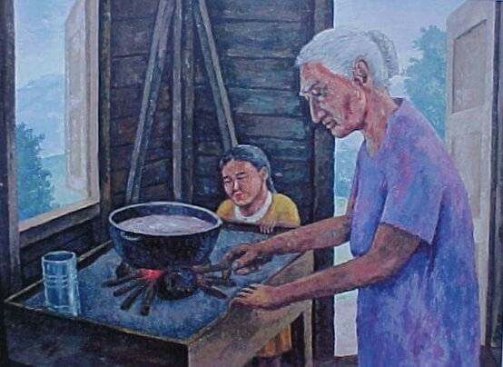

A centralized database for authentic Puerto Rican recipes. The goal is to present our tradition to current and future generations.
Abu is short for abuela which means grandmother. So it would be like saying granny or grandma in Puerto Rican lingo. Grandmothers typically connect us with the nostalgia of good cooking and the comfort we receive from it. Hoping this website become more that just another recipe website, but also a hub for learning, memory making and experience sharing for Puerto Ricans and users worldwide altogether.
